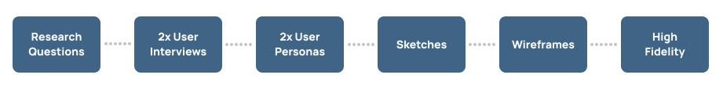
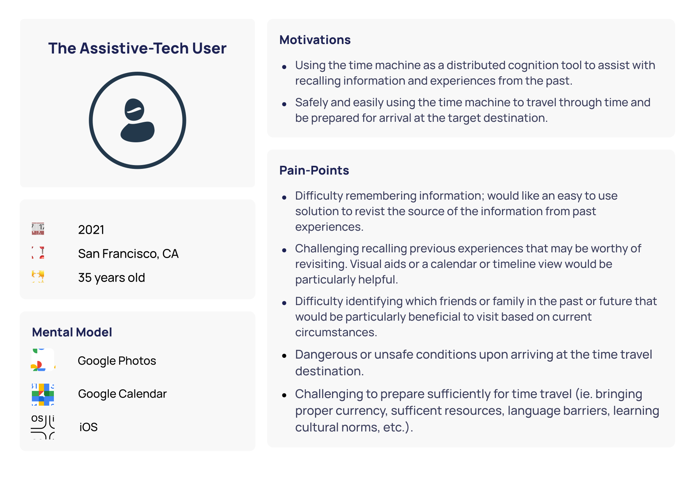
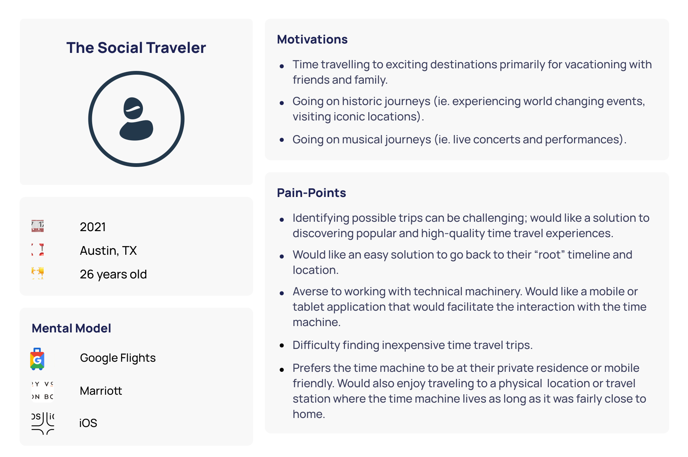
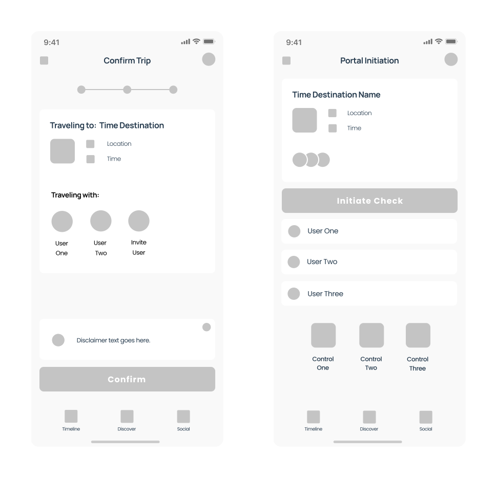
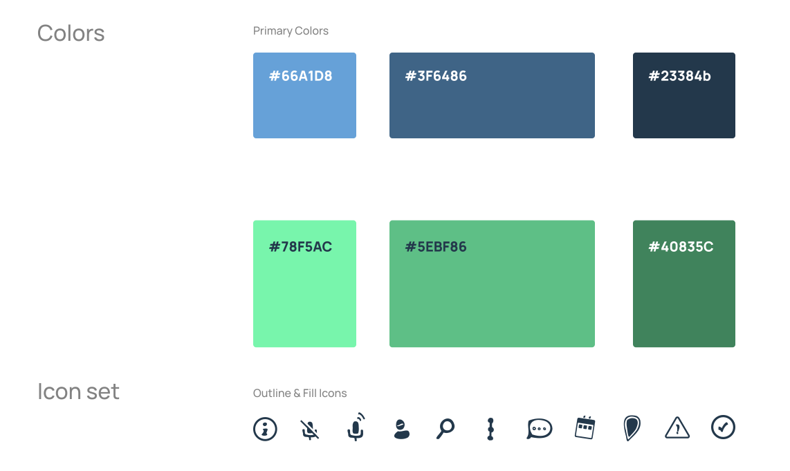
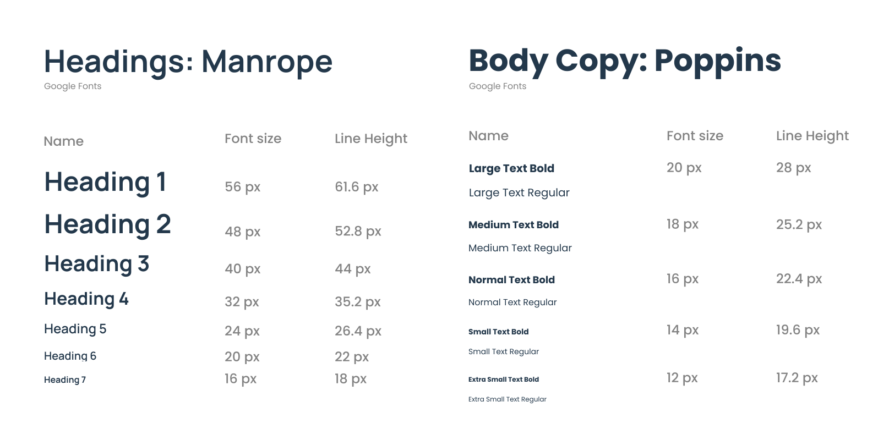

Design Problem
Design two key screens for a time travel app, including a small icon set. Create two personas and build a solution off of that.
Project Overview
- Discipline: Interaction Design
- Platforms: Mobile
- Tools Used: Figma, Photoshop, Illustrator
Approach
To solve for this design problem, I began by drafting research questions and conducting virtual stakeholder interviews to identify user needs. From there, I crafted user personas and did some quick sketches. Finally, I was able to align on a core set of features by building wireframes, that ultimately went on to inform the style guide and high-fidelity screens.

Research
Research Questions
I crafted high level research questions for the stakeholder interviews in order to gather attitudinal, behavorial, and characteristic information.
- Attitudinal:
- How do people feel about time travel?
- What are their thoughts on products that could facilitate time travel?
- Behavioral:
- Why and how do people currently travel and what are their pain points?
- Characteristic:
- Who would benefit from a time machine product?
- Who are the stakeholders of this product?
Interview Questions
From the high level research questions, individual interview questions were drafted. These questions ladder up to the attitudinal, behavorial, and characteristic information that will go on to inform the personas.
- Attitudinal:
- “What do you see as the main benefits or negative consequences of time travel?”
- “If you could wave a magic wand what would the act of time travel look like to you?”
- Behavioral:
- “What are important considerations when preparing to travel to a different location in real life right now?”
- Characteristic:
- “If you were able to time travel, what would you do, when in time would you travel to? What are your motivations or goals?”
Stakeholder Personas
Despite the pandemic, I was able to conduct two user interviews, albeit remotely. I distilled all of the interviews and findings into two personas. I decided to focus on the motivations and obstacles that people may experience while shopping or managing a small business.


Design
Sketches
Sketching basic wireframes of the core screens and components was the step in the design process. I sketched a few variations of each screen in order to document some basic concepts and layouts. I also sketched some icons that would go on to be used in the final high fidelity screens.
Final Sketches
Alternate Sketches
Icon Sketches
Wireframes
I replicated the sketches as wireframes with a few minor adjustments.

Wireframes
Visual Design
Inspiration
I pulled inspiration from mobile and tablet websites and applictions. This visual mood board served as a starting point for developing the style guide.

Colors

Typography

High-Fidelity

Check out some of my other case studies.